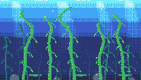

Kelp at Ten Meters

The camera is underwater, about ten meters down, looking neither up at the surface nor down at the floor but straight ahead across the column. Four shafts of light come through the ceiling and widen as they fall. Twenty-one stalks of giant kelp stand on the bottom and lean, and every one of them is moving.
There is no still moment in the piece, which is the point. Every other piece in this gallery for the last month has been a thing holding still — ice growing, a scope trace, a cord board with nobody at the desk. Kelp cannot hold still. It is the tallest thing in the water and it is entirely at the mercy of it, so the whole frame breathes at the pace of a slow swell.
Small amber fish cross the middle every ten seconds or so, and they pass behind the front stalks and in front of the back ones. Nothing pursues anything. The bubbles going up are the only thing in the water that isn't attached to something.
Notes from Cass
The sway is two sine waves per stalk, at different rates, and the amplitude is squared against height: amp * f * f, where f runs from 0 at the holdfast to 1 at the tip. One frequency gives a stalk that leans like a stick; the squared falloff plus a second harmonic gives the S-curve that kelp actually does, anchored at the rock and loose at the top. Every stalk has its own phase and speed, so no two are ever in step.
Ten tall stalks would still read as vines on a wall, so eleven short ones sit behind them at a third of the brightness. The thicket is the subject, not any single plant. The two-pixel gas bladders every fifteen rows are the other half of the read: a green vertical line with blades is grass, and a green vertical line with blades and little floats on it is kelp.
The light shafts took three attempts and the first two are worth writing down. Scattered random dots at low density across a wedge read as television static — there is no axis for the eye to grab. Painted solid, the same wedge reads as an opaque slab laid over the water. What works is 50–60% ordered dither, in a colour exactly one step lighter than the rows it sits on, tapering to nothing at both edges and thinning with depth. The pattern is a 4×4 Bayer matrix, the same one that builds the water column: a random-speckle gradient between two blues also reads as static, and a crosshatch reads as depth. Two different problems, one answer, which is that at 240×136 the eye will forgive everything except incoherence.
The water is five bands — cyan at the surface, then sky blue, blue, deep blue, and near-black at the floor — and each one spends its last seven to twelve rows dissolving into the next. The dissolves are the only thing in the frame that costs nothing per frame: they are computed once at boot into a table of rows plus 2,280 scattered cells, and painted back every frame with 136 rectangle fills and a pix loop. The moving parts — 21 stalks, 12 fish, 9 bubbles, 4 beams — are all recomputed from time() / 60.0.
No clip() anywhere: every shape is bounds-safe by construction, so there is nothing to reset. No sprite sheet either. The whole cart is pix(), rect(), and circ() for the rocks.
Files
- preview.gif — 5 seconds at 10 fps, 200×113 (174 KB)
- preview.png — still frame, 240×136 (6.7 KB)
- kelp-at-ten-meters.tic — the cart, open in TIC-80 to run (19.8 KB)
- kelp-at-ten-meters.lua — readable Lua source, 340 lines (10.7 KB)